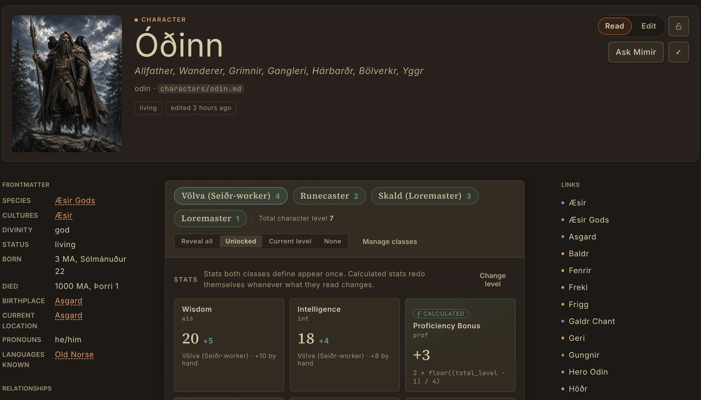
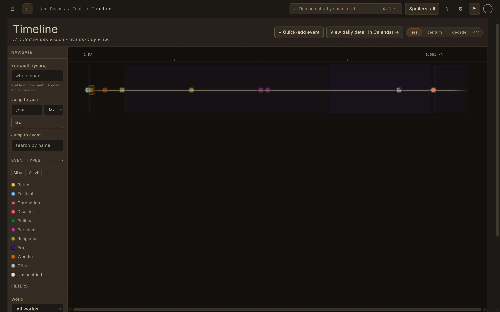
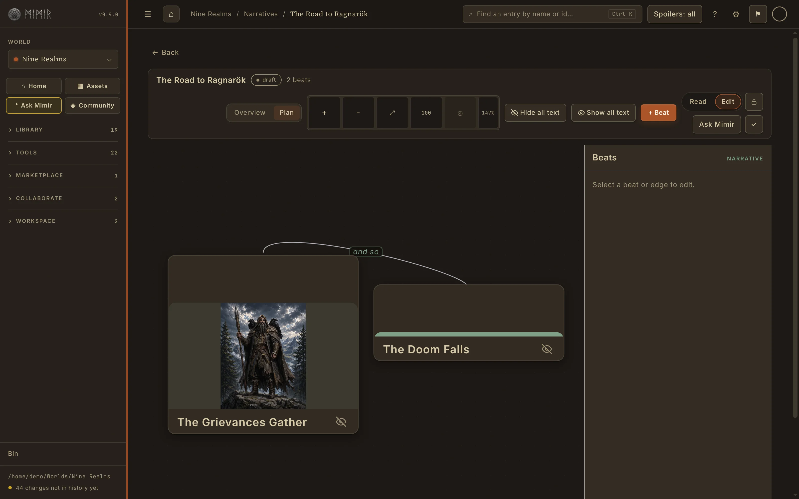

Every fact in one place, linked to every other.
Write an entry for a character, place, culture, faction, event or artefact. Type [[ and a name to link another entry as you write.
Links work both ways. Open any entry and Mimir shows every other entry that mentions it, with the sentence that does, so you can see at a glance where a character turns up.
Make your own entry types and fields when the built-in ones do not fit, and keep the whole bible as ordinary Markdown files on your own computer.
- Characters, places, cultures, factions, events and more
- Links and backlinks with the passage that mentions each entry
- Your own entry types in the Entry type editor
- History of saved versions, so any earlier draft of an entry can be restored

See when things happened, and who is related to whom.
Build your world's own calendar, with its months, weeks and moons, then place events on a timeline you can zoom from centuries down to days. Family trees draw themselves from the relationships on each character.
Spoiler levels keep reader-safe material apart from what only you should see. Mark an entry public, teased, revealed (with the chapter it is revealed in) or hidden.
- A timeline and calendar on your world's own calendar
- Family trees drawn from your relationships
- Spoiler levels from public to author-only
- A safe-to-publish export that respects them

Plan the story beside the lore it depends on.
Lay out story beats in the Narrative Planner, join them with labelled consequences and give each beat its art. When the shape feels right, turn beats into real entries.
On Worldsmith and above, Lore Consistency Review reads your prose against your structured details and connected entries, and shows each contradiction with its evidence: a date in the text that disagrees with a birth year, or a character described as alive after their entry says they died. It suggests; you decide.

Ask your own world. Write with a partner.
Ask Mimir a question about your world and it answers only from your entries, showing which ones it read. It never fills a gap with outside knowledge. Every account starts with 200 Mimir AI credits.
Writing with someone? In a Writers' Room, collaborators propose changes and you accept what becomes canon. Your local copy always stays the master. Everyone in a Writers' Room needs Worldsmith.
Frequently asked questions
- Keep it as connected entries rather than separate documents, so every character, place and event links to the others and you can see where each one appears. Mimir does this, with a timeline, family trees and spoiler levels, and keeps everything as files you own.
- Yes. Mimir Core is free for good and includes the full local toolset: entries, links, trees, timeline, calendar, maps, the Narrative Planner and export. Paid plans add monthly Mimir AI credits, sync, Lore Consistency Review and collaboration.
- Yes, in two ways. Free checks on every plan catch broken links and inconsistent names. On Worldsmith and above, Lore Consistency Review uses Mimir AI to find prose that contradicts your structured details or other entries, and shows the evidence.
- No. Mimir AI answers questions from your own world and can help you check it, but it never adds to your canon without your say. The writing stays yours.
- Yes. Mimir imports spreadsheets and documents, and has dedicated importers for Obsidian vaults, Notion exports and World Anvil world exports.
Keep the world straight. Write the story.
Mimir's public beta opens soon. Join the beta to be among the first in, or read more about the tools on this page.